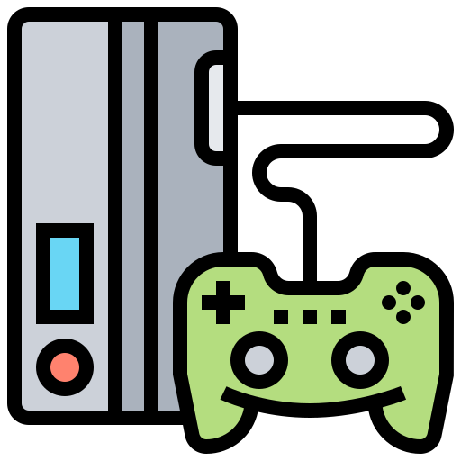
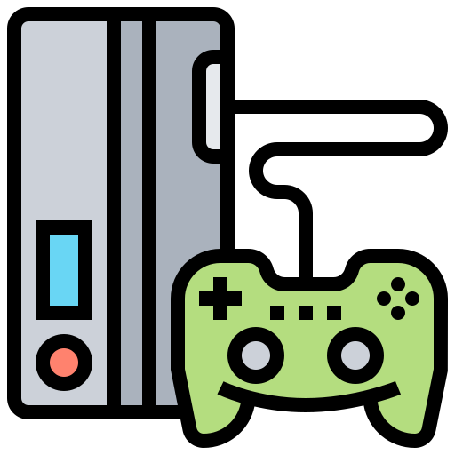

Noticias
Ultimas Noticias
Accion
God of War ha sido uno de los exclusivos más emblemáticos de Sony. La saga, hasta ahora ambientada en la mitología helénica, era fundamentalmente un hack&slash intenso, es decir, las peleas eclipsaban todo lo que se construía alrededor del juego.
Ciencia Ficcion
Basado en la novela del escritor ruso Dmitry Glukhovsky, Metro 2033 se ambienta en un futuro apocalíptico en el que Rusia ha sucumbido ante una guerra nuclear. Los supervivientes se han atrincherado en el metro, pues los exteriores son gélidos y peligrosos.
VideoJuegos
22 de febrero del 2021

 

La PlayStation 1 hizo acto de presencia en Europa en el año 1995,
aunque de manera un tanto peculiar. Su desarrollo comenzó como un proyecto
para Nintendo y su Super Nintendo, ya que ésta buscaba un accesorio con el
que poder jugar a títulos en CD. Este periférico fue presentado en el CES,
la feria tecnológica, de 1991, pero tan pronto como vio la luz, volvió a
sumirse en la oscuridad, ya que al día siguiente Nintendo anunció que ella
y Sony rompían su acuerdo colaborativo. Un ingeniero informático de Sony y
enamorado de los videojuegos, Ken Kutaragi, propuso a la compañía hacer una
videconsola propia. Después de casi dos años en los que Kutaragi buscó, sin
pena ni gloria, el respaldo de la compañía, el proyecto acabó derivándose a
Sony Music, donde adquirió un papel fundamental en la creación de CDs hasta que,
en 1993, se creó Sony Computer Entertainment.
La PlayStation 1 (también llamada PS1, PSX o PSOne) salió a la venta en 1994 en
Japón y enamoró a primera vista tanto al público como a los desarrolladores gracias
a las posibilidades técnicas que ofrecía el CD como soporte, las tres dimensiones y
el 'hardware' de la máquina en general. En Europa, un año más tarde, donde también arrasó.